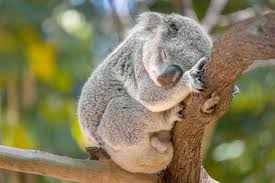

Koalas
 Los koalas viven en el este y sureste de Australia, en los bosques de eucalipto. Son un símbolo nacional de Australia y están en peligro de extinción.
Amenazas
enfrentan amenazas como la pérdida de hábitat, incendios forestales, enfermedades y el cambio climático, lo que ha llevado a su declive y, en algunas regiones, a la clasificación como especie en peligro de extinción.